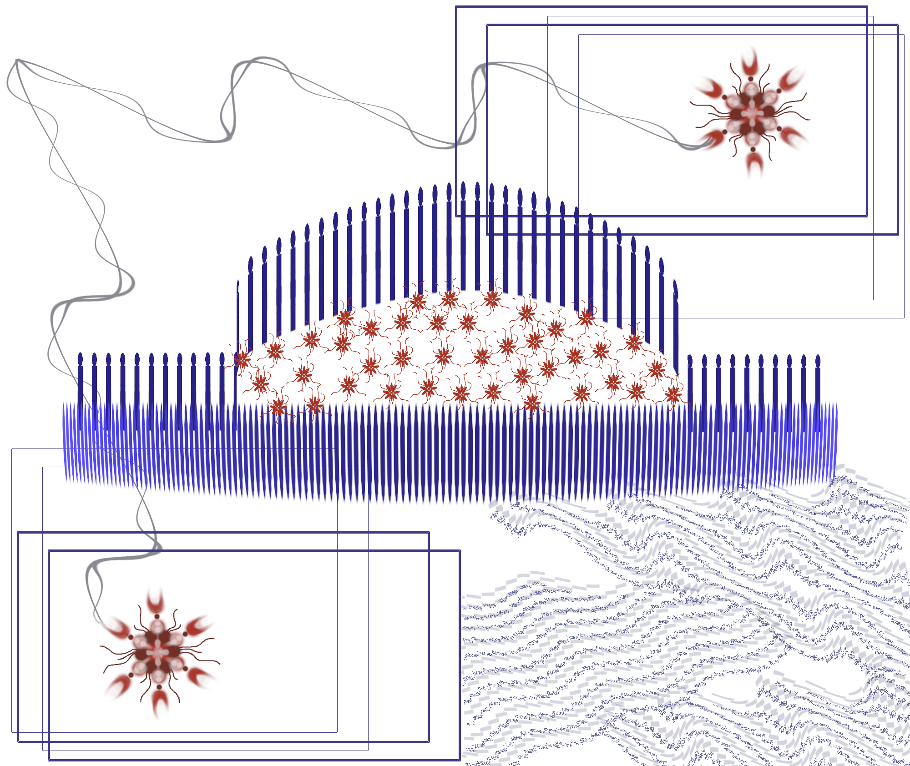
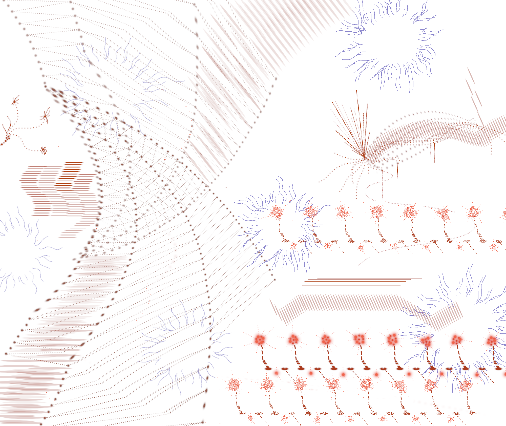
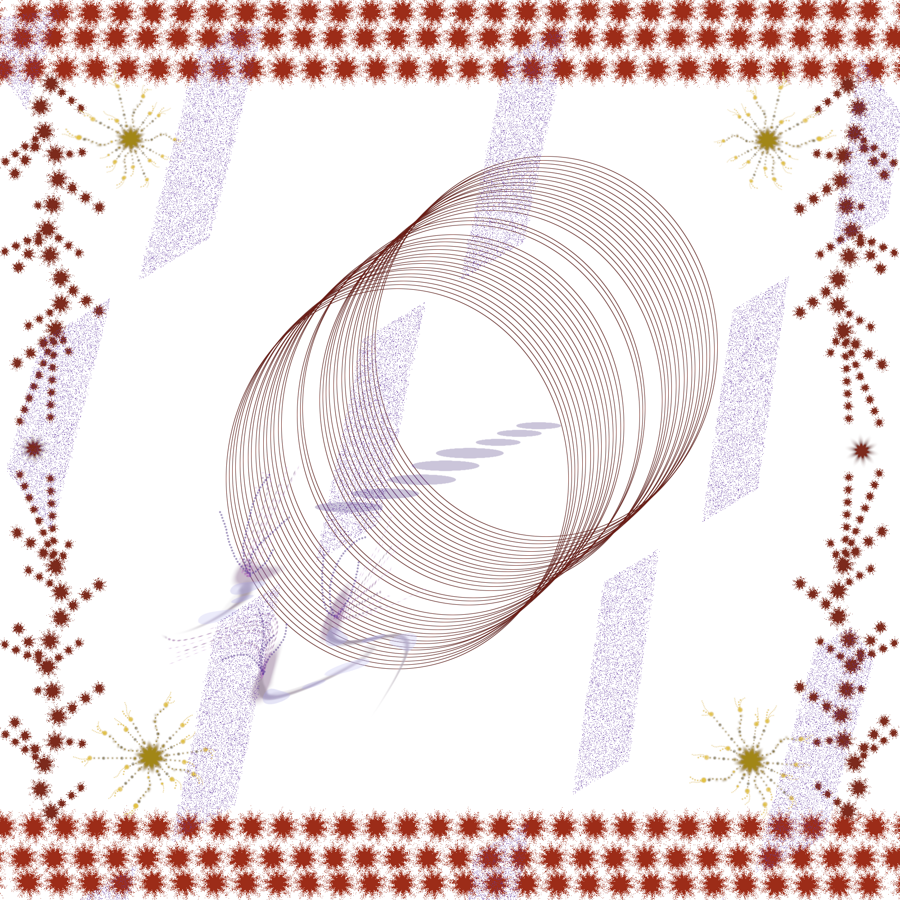
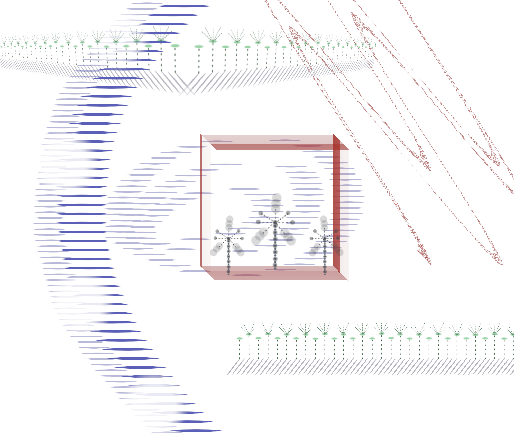
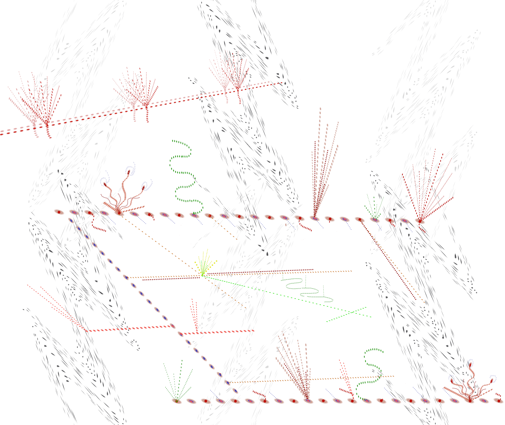
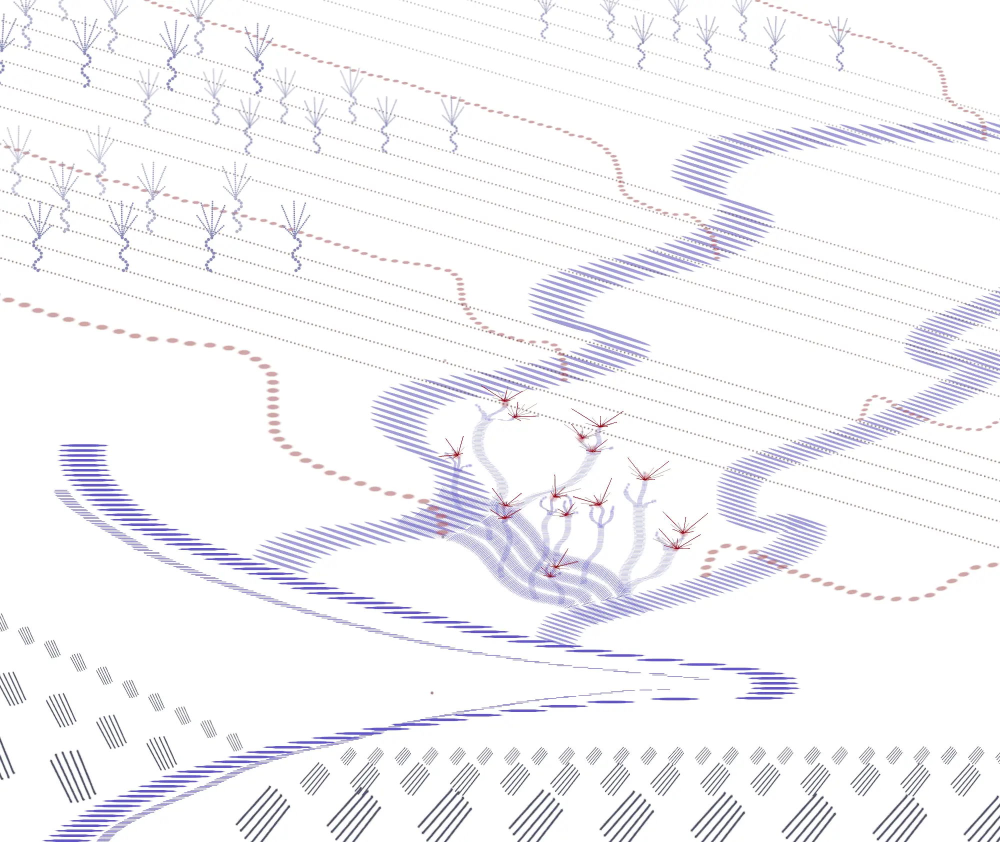
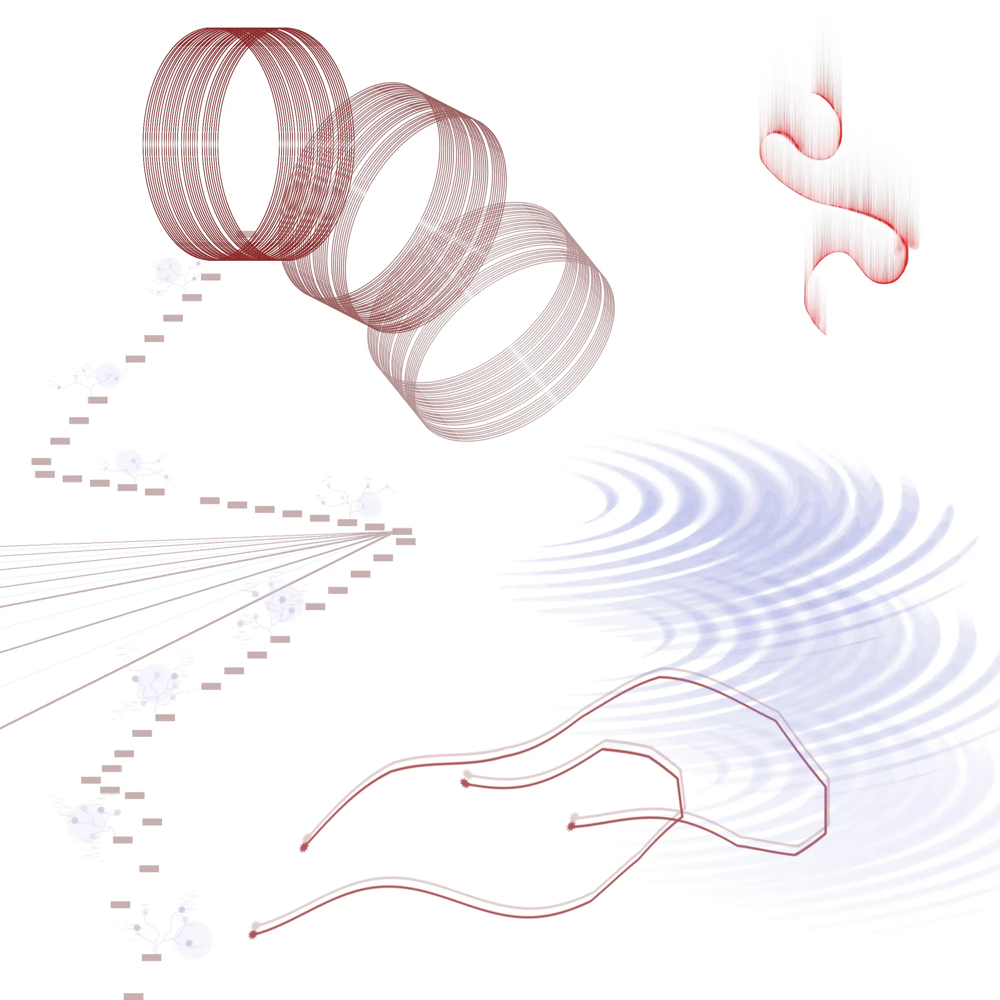

─══ Dibujos con patrones ══─
      Esta serie empezó como una exploración sobre la construcción de espacios a partir de la repetición de formas geométricas.
A través de la experimentación con distintas texturas, líneas, colores y puntos, la repetición de patrones va moldeando el entorno y generando diversas situaciones ambientales.
dibujos digitales, 2025